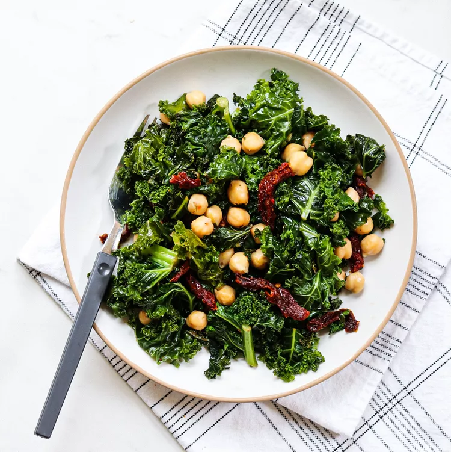

Chickpeas with Kale and Sun-dried Tomatoes

Oil-packed sun-dried tomatoes pull double duty in this chickpeas and kale recipe. Use the oil from the jar to cook the kale, then stir in the sun-dried tomatoes to add flavor and texture to the dish.
Ingrediants
- 1/4 cup slivered oil-pack sun-dried tomatoes, plus 1 tablespoon oil from the jar
- 1 10-ounce package chopped kale
- 1/3 cup water
- 1 15 ounce can no-salt chickpeas, rinsed
Steps
- Heat sun-dried tomato oil in a large nonstick skillet over medium heat. Add kale and cook, stirring, until wilted and bright green, about 2 minutes. Add water, reduce heat to medium-low, cover and cook for 3 minutes more.
- Fold in chickpeas and sun-dried tomatoes; cook, stirring, until heated through, about 1 minute.